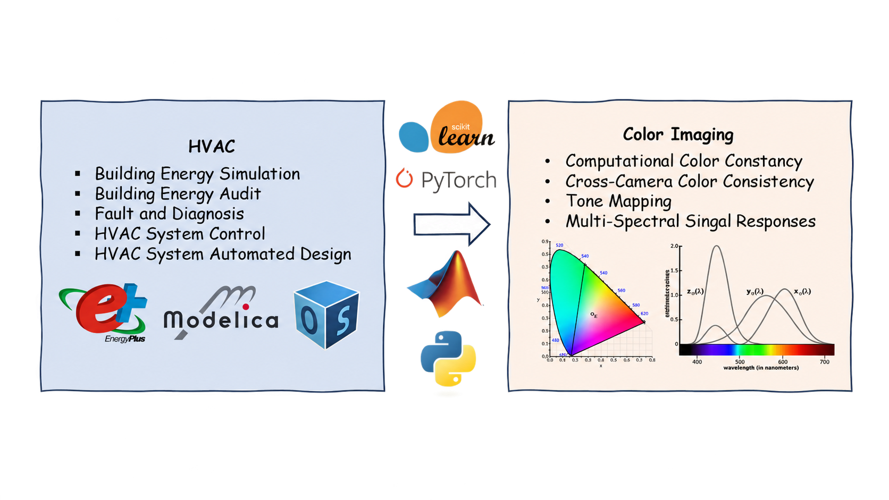
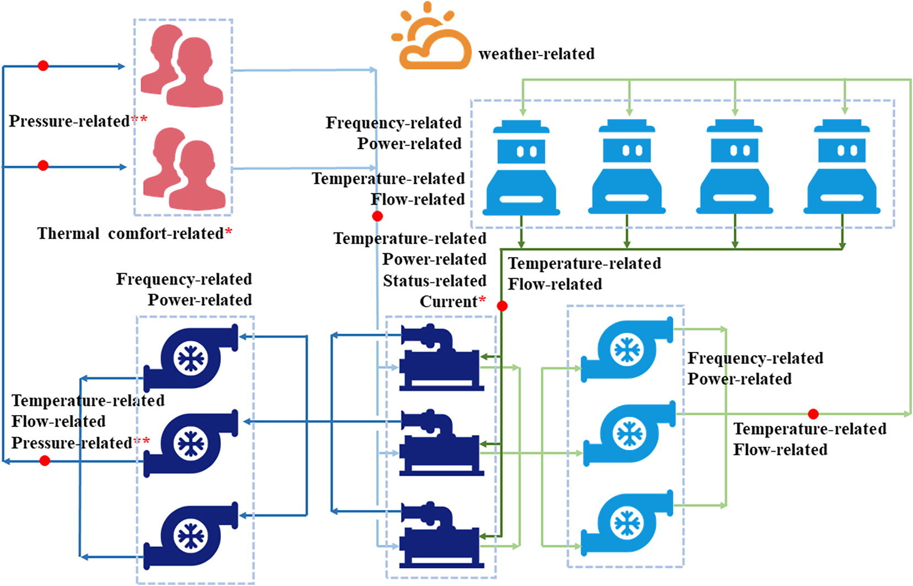
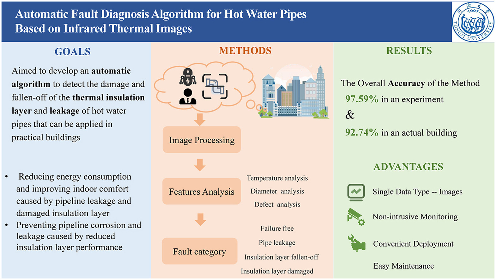
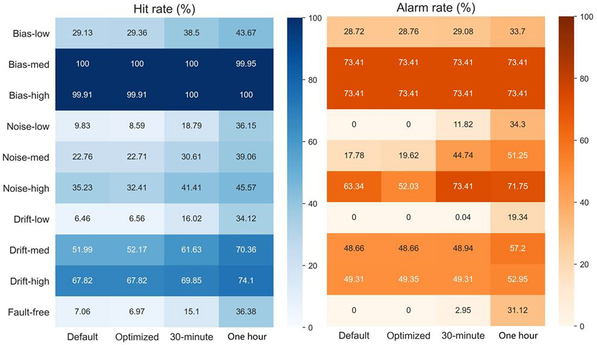
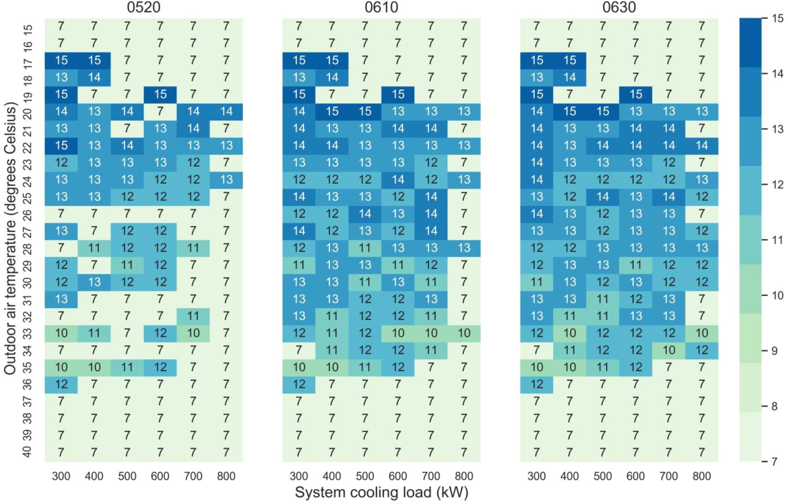
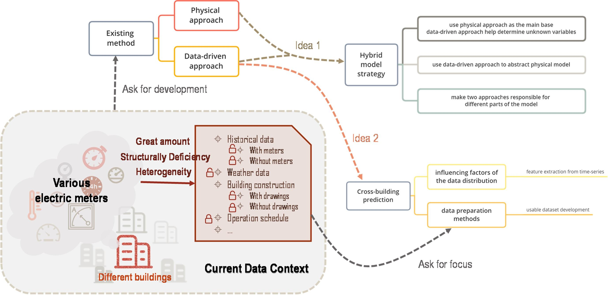
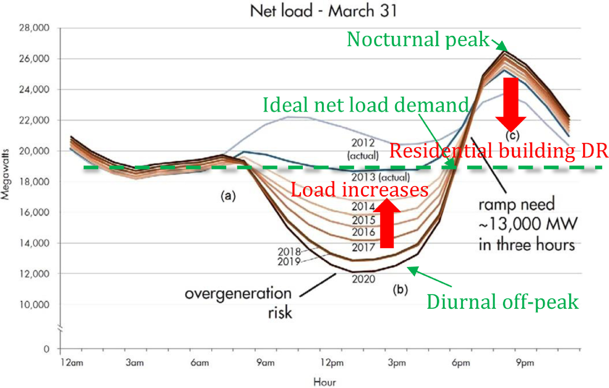
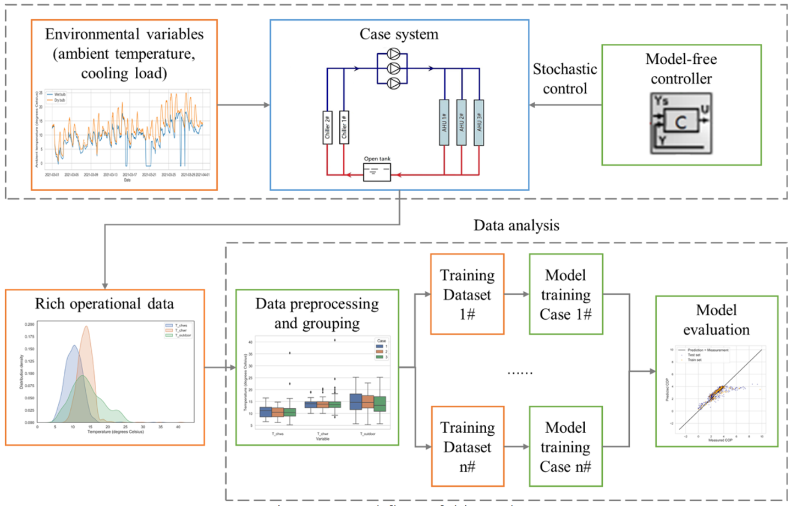
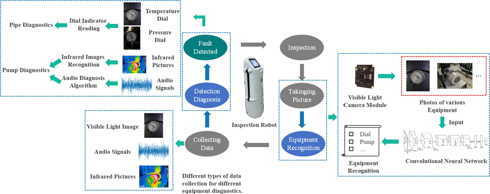
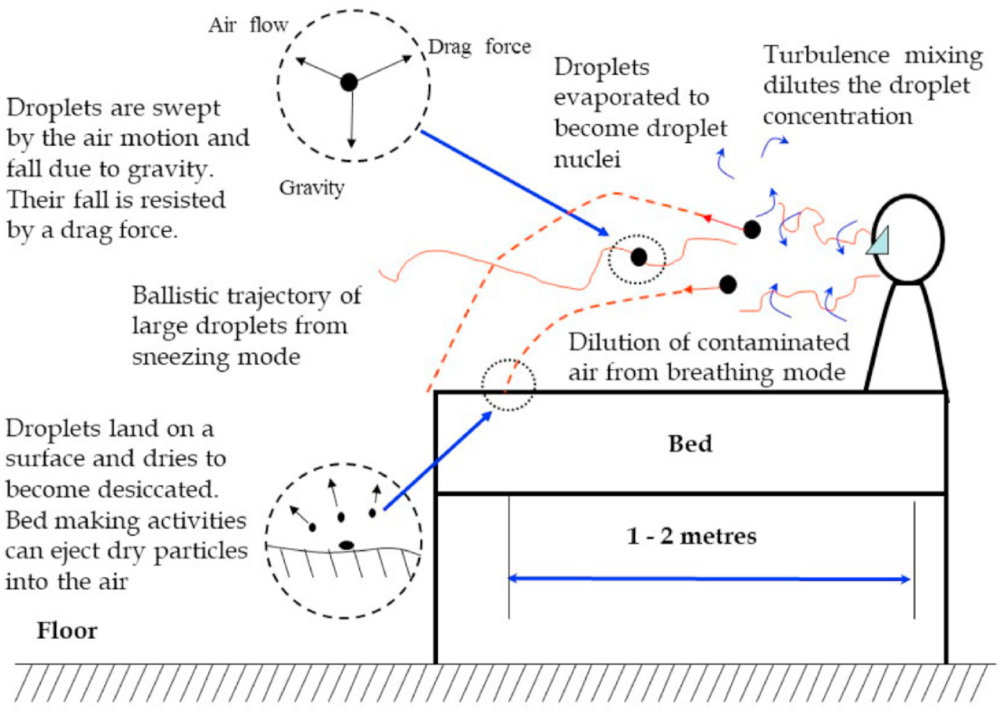

Do-It-Yourself Hyperspectral Imaging ↗
A MATLAB reproduction of a CVPR 2016 method for recovering hyperspectral images with everyday digital cameras.
I am a Research Associate at The Hong Kong Polytechnic University, advised by Prof. Minchen Wei. My work focuses on camera-side image processing, especially tone mapping and computational color constancy. I build deep-learning prototypes in Python and PyTorch and use AI-assisted workflows to explore their path toward edge-device deployment.
For my Ph.D. studies in Color Imaging, I pivoted from HVAC engineering to color science and image processing, building this new research foundation from the ground up. My research spans computational color constancy, cross-camera color consistency (color matching), and tone mapping. Working with RAW/DNG images has helped me connect algorithms to practical camera imaging pipelines.
Before imaging, I studied HVAC engineering at Tongji University with Prof. Peng Xu. My training covered building energy simulation and audits, HVAC system control, automated system design, and fault detection and diagnosis.












A MATLAB reproduction of a CVPR 2016 method for recovering hyperspectral images with everyday digital cameras.
A Python reproduction of Shades of Grey and first- and second-order Grey-Edge methods for illuminant estimation.
A Python notebook exploring two-dimensional color transforms and the limits of a linear 3 × 3 color matrix.